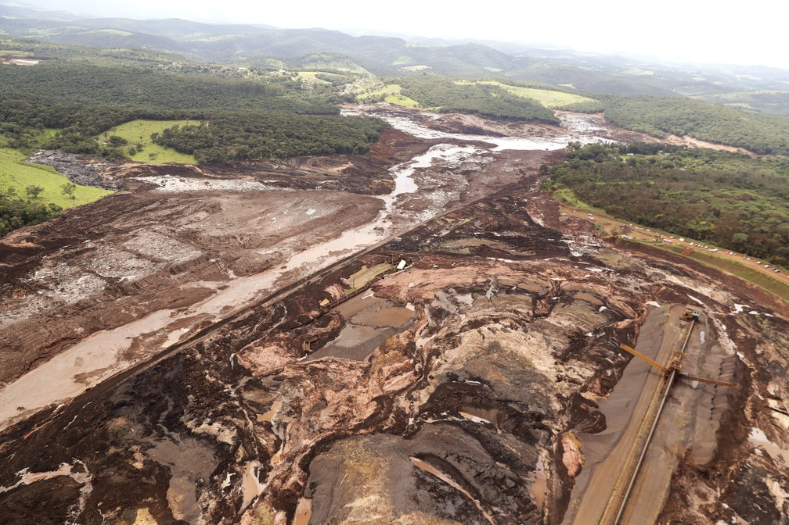

O rompimento da barragem de Brumadinho, em 25 de janeiro de 2019, resultou em um dos maiores desastres com rejeitos de mineração no Brasil. A barragem de rejeitos, classificada como de "baixo risco" e "alto potencial de danos",[2] era controlada pela Vale S.A. e estava localizada no ribeirão Ferro-Carvão, na região de Córrego do Feijão,[5] no município brasileiro de Brumadinho, a 65 km de Belo Horizonte, em Minas Gerais.
O rompimento resultou em um desastre de grandes proporções, considerado como um desastre industrial, humanitário[6] e ambiental, com mais de 200 mortos e cerca de 93 desaparecidos até então, gerando uma calamidade pública. O desastre pode ainda ser considerado o segundo maior desastre industrial do século e o maior acidente de trabalho do Brasil.[8][9][10][11] O presidente da Vale, Fabio Schvartsman, em entrevista coletiva salientou que, na tragédia de Brumadinho, "o dano humano será maior", diferente do rompimento da barragem de Bento Rodrigues, em Mariana, que também era controlada pela Vale S.A. e está a menos de 200 quilômetros de Brumadinho.
Impacto
Brumadinho é um dos municípios onde está localizada parte da unidade de conservação do Parque Estadual da Serra do Rola-Moça. A barragem rompida se localiza na zona de amortecimento do Parque criado em 1994 e que tem como objetivo proteger seis mananciais na região.
O rompimento da barragem liberou cerca de 12 milhões de metros cúbicos de rejeitos. "Nós temos os impactos químicos dos metais que vão sedimentar, que vão se incorporar ao solo, aos fundos dos rios. Vamos acabar impactando todo o ecossistema, ou seja, as próprias características biológicas do ecossistema, os peixes de vida superior, etc", explica Antônio Eduardo Giasante, professor de engenharia hídrica da Universidade Mackenzie. Segundo ambientalistas, a onda de rejeitos pode chegar ao rio São Francisco, que além de Minas Gerais passa por outros quatro estados brasileiros, mas antes irá passar pelas barragens de duas usinas hidrelétricas: a de Retiro Baixo e a de Três Marias. A Agência Nacional de Águas (ANA) informou que a lama poluiu, pelo menos, 300 quilômetros de rios. O presidente da Vale, Fabio Schvartsman, disse que a barragem estava inativa desde 2015 e que o material não deve se deslocar muito. "Eu creio que o risco ambiental, nesse caso, vai ser bem menor que o de Mariana", disse.
Maria Dalce Ricas, superintendente-executiva da Associação Mineira de Defesa do Ambiente (AMDA) afirmou que "os danos ambientais certamente são muito grandes devido às características da região. A lama está descendo a Serra dos Dois Irmãos, atravessando a estrada que liga Belo Horizonte a Brumadinho, em direção ao rio Paraopeba. E nessa direção tem muita Mata Atlântica, muita fauna. A lama está atravessando uma área que é da própria Vale e certamente vai matar uma parte da floresta, muitos animais silvestres e deve chegar à água. A gente não sabe ainda quais as consequências para o rio, que já está debilitado, em mau estado, mas ainda fornece água para parte da população. E vai chegar com lama tóxica, então ninguém vai poder beber dessa água e a captação de água terá que ser interrompida."
Em nota, o Greenpeace Brasil afirmou que "este novo desastre com barragem de rejeitos de minérios, desta vez em Brumadinho (MG), é uma triste consequência da lição não aprendida pelo Estado brasileiro e pelas mineradoras com a tragédia da barragem de Fundão, da Samarco, em Mariana (MG), também controlada pela Vale. Minérios são um recurso finito que devem ser explorados de forma estratégica e com regime de licenciamento e fiscalização rígidos. A reciclagem e reaproveitamento devem ser priorizados. Infelizmente, grupos econômicos com forte lobby entre os parlamentares insistem em querer afrouxar as regras do licenciamento ambiental, o que, temos alertado, significaria criar uma 'fábrica de Marianas'. Casos como esse, portanto, não são acidentes, mas crimes ambientais que devem ser investigados, punidos e reparados." A organização SOS Mata Atlântica também lamentou o ocorrido: "Toda nossa solidariedade aos atingidos e aos moradores de Brumadinho, na bacia do rio Paraopeba, que é formadora do Rio São Francisco. Vamos acompanhar de perto mais essa tragédia anunciada. Isso é muito triste. Os responsáveis não podem ficar impunes!"[90] Malu Ribeiro, coordenadora da SOS Mata Atlântica, afirmou que "no Brasil existem cerca de 230 represas como esta que representam risco socioambiental. É uma bomba-relógio